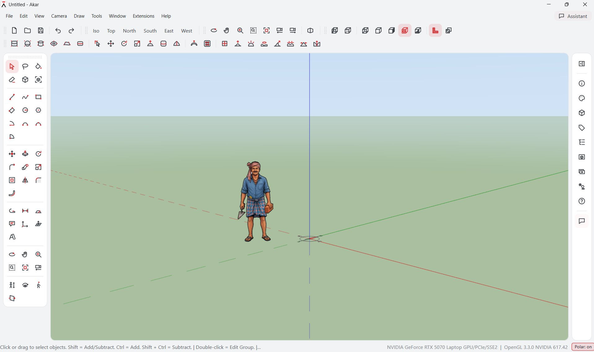
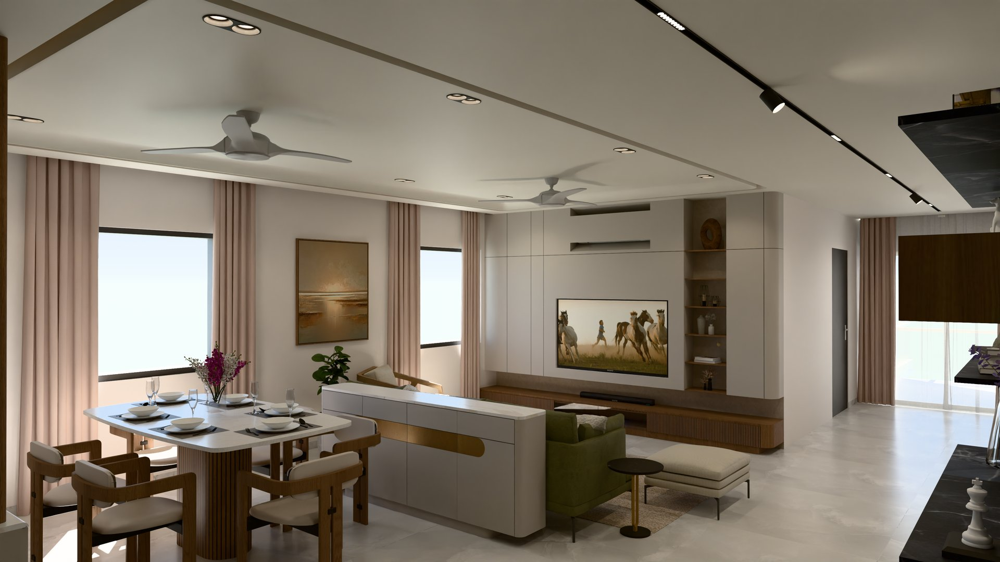
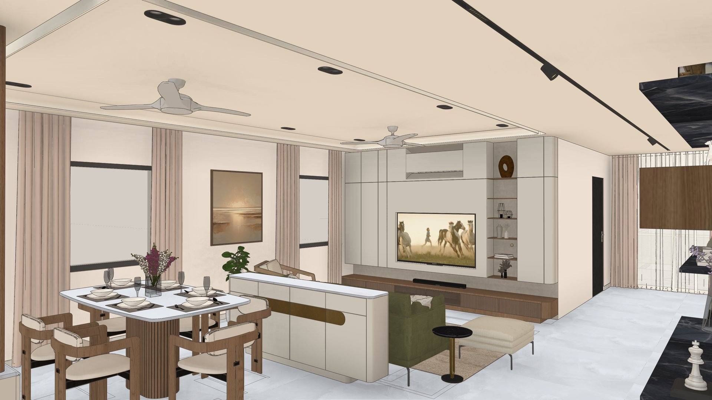

Model the way you already draw.
Akar is a 3D modeller from Tesseract Studio, an architecture practice in Hyderabad. It has the tools you know from SketchUp and a few it doesn't, turns AutoCAD plans into 3D floors, renders photoreal pictures, and has an Assistant that builds what you describe.

The tools are where your hands expect them.
It opens and saves SketchUp files, so your existing models come with you. Typed lengths, inference snapping, Shift to lock a direction, the same shortcuts. Groups and components, tags and the Outliner, sections with hatches, shadows by date and place, scenes and animations.
Built in, with no extensions to hunt for.
Tools that SketchUp leaves to add-ons, or doesn't have at all.
Mirror
Pick three points for the mirror plane, or two for an upright one. Tap Ctrl to keep the original.
Round Corners
Round, sharp or bevelled corners with a live preview. Set the offset and segments as you go.
Bend
Bend a group along any path, a line, an arc or a curve, stretched or kept to length.
Swept Blend
Sweep along a path through several different profiles, and the shape flows smoothly from one to the next.
Working plane
Lock drawing to any plane: a face, a floor level or three points. Every point lands on it.
Sculpt tools
Soft forms for furniture and objects: brushes, creases, Thicken, cushions with tufting, and jali or Voronoi cut-outs.
Plans to floors
A DWG plan becomes walls, doors, windows and rooms, then 3D floors with frames and glass. See below.
Assistant
Describe it, or attach a photo or drawing, and it builds the model with you. Keep or undo in one click.
Quantities
Wall areas and volumes by thickness, a door and window schedule, and room areas from an imported plan.
Bring in an AutoCAD plan. Get floors back.
Import the DWG
File › Import AutoCAD Plan. Several plans on one sheet? Pick the ones you want.
Say which floor
Ground, first, second… Floors stack at their heights and line up by their walls.
Answer a few questions
A gap that might be a door, a room without a name, an odd wall thickness. Tell it once which layers are walls.
Build
Walls, slabs, door and window frames with glass, painted and grouped by floor.
Say what you want in your own words.
- Attach a photo, a PDF or a DWGIt asks a few questions on a card (width, height, finish) or goes ahead with sensible guesses.
- It checks its own workIt looks at the model from the photo's angle and measures the outline against the photo.
- Rooms, floors, stairs, built-insWalls, openings, slabs, staircases, railings, kitchens, wardrobes, TV units.
The Assistant runs on Claude, by Anthropic. In this early version it uses your own Claude account (a Pro or Max plan, through the free Claude Code app) or an Anthropic API key. Everything else in Akar works without it.
From model to photograph, in the same window.
Render the view you're on, or any scene. A quick picture in seconds, or a photoreal one with real sunlight, sky and lamps.


The view as Akar draws it, in seconds
Textures, shadows and styles, smoothed and saved at full size. With or without edges. Good for checking a view or sending a picture straight away.
Light that behaves like real light
Cycles path tracing: sun and sky for your date and place, lamps, glass and reflections. Draft to check, Final to send. It runs on an NVIDIA graphics card, or on the processor if there isn't one.
- LampsDownlights, spots, pendants, bulbs, LED strips, panels, wall lights and track spots, each with its lumens, colour temperature and beam.
- Any size, every sceneHD, Full HD, 4K or your own size. Render all your scenes in one go and save them as PNG or JPEG.
- Keeps itself up to dateThe renderer (about 93 MB) downloads the first time you need it, then updates itself in the background.
It talks to the rest of your office.
Open your SketchUp models and carry on in Akar, then save back to .skp when someone needs the file in SketchUp.
Models are saved as .akr files, or as .skp for SketchUp. Plugins add tools, panels and file types, and install from one .akrplugin file.
Akar 0.13.5 for Windows
Free. One setup file. The photoreal renderer downloads itself the first time you use it.
48 MB · installs for you alone, no administrator rights needed- Windows
- Windows 10 (version 1809 or later) or Windows 11, 64-bit
- Graphics
- OpenGL 3.3. Tested on Intel HD 630, Intel Arc and NVIDIA RTX.
- Disk
- About 150 MB
- Photoreal
- Fastest on an NVIDIA graphics card; otherwise it uses the processor. About 93 MB more the first time.
- Assistant
- Internet, and a Claude Pro or Max plan (through Claude Code) or an Anthropic API key
- Download the setup file and open it.
- If Windows says "Windows protected your PC", click More info, then Run anyway. Windows shows this for new programs until enough people have installed them.
- Click through the setup. Akar goes in your Start menu and .akr files open with it.
- On a laptop with two graphics chips, set Akar to High performance in Windows Settings › Display › Graphics.
- For the Assistant, install Claude Code, sign in, then in Akar open the Assistant and choose ⚙ › Connect Claude.
Tell us what you made, and what got in your way.
Akar is in its first round of testing with architects. A note about what worked, what broke and what you missed helps more than you'd think.
tools@tesseractstudio.co